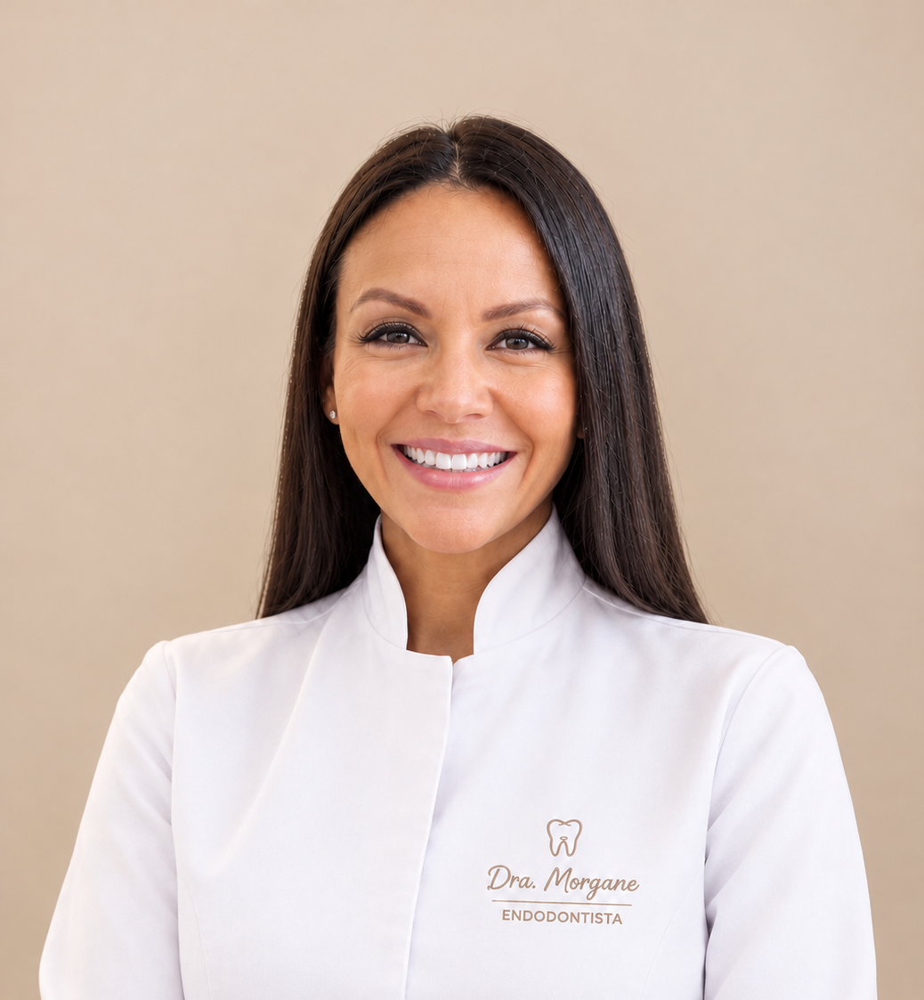

Endodontia
O que é o tratamento de canal?

O tratamento de canal, também chamado de tratamento endodôntico, é o procedimento indicado quando a polpa do dente, o tecido interno que contém nervos e vasos sanguíneos, é atingida por cárie profunda, trauma ou infecção.
Sem tratamento, a infecção se espalha, pode causar abscesso, destruição óssea e levar à perda do dente. O tratamento de canal elimina a infecção, alivia a dor e salva o dente natural.
A Dra. Morgane Marion realiza o tratamento de canal com microscopia operatória e equipamentos de última geração, garantindo máxima precisão, segurança e conforto para o paciente.
Quando é necessário?
Sintomas que indicam necessidade de canal
-
01
Dor intensa e persistente
Dor forte no dente que não passa, especialmente ao mastigar ou ao deitar.
-
02
Sensibilidade prolongada
Sensibilidade ao calor ou frio que persiste por mais de alguns segundos.
-
03
Inchaço ou abscesso
Inchaço na gengiva próxima ao dente, bolsa de pus ou inchaço no rosto.
-
04
Escurecimento do dente
Dente que escurece progressivamente pode indicar polpa comprometida.
Diferencial
Por que a microscopia operatória faz toda a diferença
A microscopia amplia o campo visual em até 25x, permitindo identificar canais extras, calcificações e detalhes impossíveis de ver a olho nu.
Instrumentação mais precisa reduz erros, evita perfurações e aumenta significativamente a taxa de sucesso do tratamento.
Menos tentativas, menos tempo de boca aberta e procedimento mais rápido resultam em uma experiência muito mais confortável para o paciente.
Passo a passo
Como é o tratamento de canal com a Dra. Morgane Marion
-
01
Avaliação e diagnóstico
Exame clínico completo com radiografias digitais e testes de vitalidade pulpar para diagnóstico preciso.
-
02
Anestesia moderna
Aplicação de anestesia local com técnica avançada para garantir que o procedimento seja totalmente indolor.
-
03
Limpeza com microscopia
Remoção da polpa comprometida e limpeza completa dos canais com instrumentação rotatória e microscopia operatória.
-
04
Obturação e selamento
Preenchimento e selamento dos canais com materiais biocompatíveis de última geração para impedir nova infecção.
-
05
Restauração final
Orientação sobre a restauração definitiva do dente para garantir proteção e função mastigatória completa.
A especialista
Dra. Morgane Marion
Graduada pela Universidade Federal de Santa Catarina (UFSC), a Dra. Morgane Marion é especialista, mestre e doutora em Endodontia na UFSC, com diversos artigos científicos publicados na área.
Com mais de 15 anos dedicados à Endodontia, ela é referência em tratamento de canal com microscopia operatória em Florianópolis, unindo ciência de ponta com atendimento humanizado.
Cada paciente recebe um plano de tratamento individualizado, com explicação de cada etapa e total atenção ao conforto durante o procedimento.
CRO SC/13142 · Endodontia · Harmonização Orofacial
Agendar com a Dra. Morgane Meu currículo AcadêmicoBenefícios
Por que fazer o tratamento de canal com a Dra. Morgane Marion
O tratamento de canal é a melhor opção para preservar seu dente, evitando extrações e custos futuros com implantes.
Após o tratamento, a dor causada pela inflamação ou infecção é eliminada permanentemente.
A maioria dos pacientes retorna às atividades normais no mesmo dia ou no dia seguinte ao procedimento.
Atendemos em Português, Inglês, Alemão e Russo — ideal para pacientes estrangeiros em Florianópolis.
Fornecemos toda a documentação necessária para você solicitar reembolso ao seu plano de saúde.
Microscopia operatória, instrumentação rotatória e radiografia digital para máxima precisão e segurança.
Dúvidas frequentes
Perguntas sobre tratamento de canal
Não. Com anestesia local moderna e técnicas avançadas, o tratamento de canal é praticamente indolor. A maioria dos pacientes relata que o procedimento foi muito mais tranquilo do que imaginavam.
Em muitos casos o tratamento pode ser concluído em uma única sessão. Casos mais complexos podem necessitar de duas a três sessões, dependendo da anatomia do dente e do grau de infecção.
A microscopia operatória é uma tecnologia que permite ao endodontista visualizar os canais radiculares com grande ampliação e iluminação. Isso aumenta a precisão do tratamento, reduz erros e melhora significativamente os resultados finais.
É comum sentir leve desconforto ou sensibilidade nos primeiros dias, controlado com medicação prescrita. A maioria dos pacientes retorna às atividades normais no mesmo dia ou no dia seguinte ao procedimento.
Sim. Se o seu plano oferecer cobertura por reembolso, você pode solicitar o ressarcimento das despesas. A Dra. Morgane e sua equipe fornecem toda a documentação necessária para facilitar o processo junto ao seu convênio.
Sim, e a Dra. Morgane é especialista em lidar com pacientes ansiosos. O atendimento é humanizado, cada etapa é explicada com antecedência e todo o cuidado é tomado para garantir o máximo conforto durante o procedimento.
Fontes
Referências científicas e institucionais
- Associação Americana de Endodontistas (AAE) — informações sobre o tratamento de canal, suas etapas e a preservação do dente natural. Root Canal Treatment – AAE
- Ministério da Saúde — informações sobre a oferta de tratamento endodôntico no atendimento odontológico especializado. Ministério da Saúde – Saúde Bucal
- Secretaria de Estado de Saúde do Distrito Federal — protocolo clínico de endodontia, com indicações e orientações sobre o tratamento. Protocolo de Atenção à Saúde – Endodontia
Redes sociais
Acompanhe meu trabalho
Siga a Dra. Morgane no Instagram ou fale diretamente pelo WhatsApp.